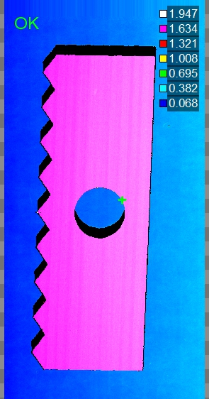
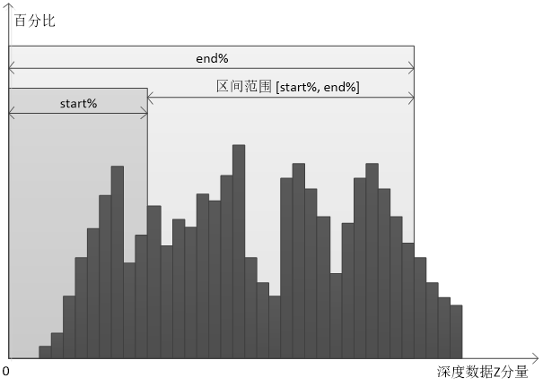

Định vị dữ liệu độ sâu của một loại đặc trưng trong vùng kiểm tra của ảnh độ sâu, hình 1 minh họa điểm đặc trưng có Z lớn nhất trong vùng kiểm tra.

| Phân loại | Tên tham số | Mô tả tham số |
|---|---|---|
| Cửa sổ thuộc tính | Phương thức tạo ROI | Chia thành 3 loại: định vị, ROI cố định, điểm tham chiếu. Trong đó, chế độ định vị: ROI có thể thay đổi theo phép biến đổi tuyến tính 2D; chế độ ROI cố định: vị trí ROI không đổi; chế độ điểm tham chiếu: thiết lập hệ tọa độ sản phẩm dựa trên đường điểm tham chiếu, sau đó tạo ROI bằng độ lệch cố định. |
| Loại ROI | Vùng kiểm tra, chia thành 3 loại: toàn bộ ảnh, hình chữ nhật, hình chữ nhật affine. | |
| Loại đặc trưng | Lấy thông tin tọa độ 3D của điểm đặc trưng theo loại đặc trưng của dữ liệu độ sâu. |
|
| Giới hạn trên, dưới của khoảng | Dữ liệu độ sâu trong vùng đo được sắp xếp theo thành phần Z từ nhỏ đến lớn, sau đó lấy giá trị trung bình, trung vị và các điểm đặc trưng khác của dữ liệu độ sâu nằm trong khoảng start% ~ end%. Phạm vi giá trị là giới hạn dưới [0,100), giới hạn trên (0,100], và giới hạn dưới nhỏ hơn giới hạn trên. |
|
| Bật tính toán đuôi cao/thấp | Chọn “Có”, thì thực hiện tính toán thống kê histogram cho đuôi thấp và đuôi cao. | |
| Phân số đuôi thấp | Tham số tỷ lệ để tính đuôi thấp, phạm vi giá trị là [0,1], và tổng phân số đuôi cao/thấp nhỏ hơn hoặc bằng 1, tham khảo tham số đuôi thấp trong cửa sổ giám sát. | |
| Phân số đuôi cao | Tham số tỷ lệ để tính đuôi cao, phạm vi giá trị là [0,1], tham khảo tham số đuôi thấp trong cửa sổ giám sát, và tổng phân số đuôi cao/thấp nhỏ hơn hoặc bằng 1, tham khảo tham số đuôi cao trong cửa sổ giám sát. | |
| Cửa sổ ảnh | Ảnh độ sâu | Hiển thị ảnh độ sâu cần kiểm tra, hiển thị dưới dạng ảnh giả màu. |
| Vùng kiểm tra | Hiển thị vùng kiểm tra trên ảnh. | |
| Liên kết dữ liệu | Ảnh độ sâu đầu vào | Nhập ảnh độ sâu cần kiểm tra. |
| Biến đổi tuyến tính 2D | Phép biến đổi tịnh tiến, xoay, co giãn của mục tiêu so với mẫu. | |
| Giao diện nâng cao | Không | Không |
| Phân loại | Tên tham số | Mô tả tham số |
|---|---|---|
| Cửa sổ giám sát | Ảnh độ sâu đầu vào | Chiều dài, chiều rộng và kích thước pixel của ảnh đầu vào, cũng như tham số dữ liệu độ sâu. |
| Điểm đặc trưng | Thông tin tọa độ 3D của điểm đặc trưng trong vùng kiểm tra. | |
| Tập điểm đặc trưng | Tất cả các điểm trong vùng kiểm tra. |
|
| Kết quả thực thi | Kết quả thực thi công cụ. | |
| Thời gian thực thi | Thời gian thực thi công cụ. | |
| Cửa sổ ảnh | Ảnh độ sâu đầu vào | Hiển thị ảnh độ sâu được kiểm tra, hiển thị dưới dạng ảnh giả màu. |
| Điểm đặc trưng | Hiển thị kết quả điểm đặc trưng. | |
| Liên kết dữ liệu | Liên kết dữ liệu | Giống với tham số trong cửa sổ giám sát, dùng cho các công cụ phía sau. |
Giả sử phạm vi khoảng là [start%, end%], thì chỉ dữ liệu nằm trong phạm vi khoảng mới hợp lệ; như hình 2, khi cấu hình tham số cho vùng đo, dữ liệu độ sâu trong vùng sẽ được sắp xếp theo thành phần Z từ nhỏ đến lớn, sau đó lấy giá trị trung bình, trung vị và các điểm đặc trưng khác của dữ liệu độ sâu nằm trong khoảng start% ~ end%.

Step 1 Thiết lập vùng kiểm tra và loại đặc trưng dữ liệu độ sâu
Để lấy thông tin tọa độ 3D của điểm đặc trưng trong dữ liệu độ sâu, cần thiết lập vùng kiểm tra và loại đặc trưng dữ liệu độ sâu. Trong đó, vùng kiểm tra có 3 loại: toàn bộ ảnh, hình chữ nhật, hình chữ nhật affine; còn loại đặc trưng dữ liệu độ sâu có 9 loại: giá trị trung bình, trung vị, tâm khối, X lớn nhất, X nhỏ nhất, Y lớn nhất, Y nhỏ nhất, Z lớn nhất, Z nhỏ nhất.
Giá trị trung bình: giá trị trung bình của tọa độ (X,Y,Z) của tất cả dữ liệu độ sâu trong vùng kiểm tra.
Trung vị: trung vị của tọa độ (X,Y,Z) của tất cả dữ liệu độ sâu trong vùng kiểm tra.
Tâm khối: tâm khối của tọa độ (X,Y,Z) của tất cả dữ liệu độ sâu trong vùng kiểm tra.
Giá trị X lớn nhất: thông tin tọa độ của dữ liệu độ sâu tương ứng với tọa độ X lớn nhất trong tất cả tọa độ dữ liệu độ sâu (X,Y,Z) trong vùng kiểm tra.
Giá trị X nhỏ nhất: thông tin tọa độ của dữ liệu độ sâu tương ứng với tọa độ X nhỏ nhất trong tất cả tọa độ dữ liệu độ sâu (X,Y,Z) trong vùng kiểm tra.
Giá trị Y lớn nhất: thông tin tọa độ của dữ liệu độ sâu tương ứng với tọa độ Y lớn nhất trong tất cả tọa độ dữ liệu độ sâu (X,Y,Z) trong vùng kiểm tra.
Giá trị Y nhỏ nhất: thông tin tọa độ của dữ liệu độ sâu tương ứng với tọa độ Y nhỏ nhất trong tất cả tọa độ dữ liệu độ sâu (X,Y,Z) trong vùng kiểm tra.
Giá trị Z lớn nhất: thông tin tọa độ của dữ liệu độ sâu tương ứng với tọa độ Z lớn nhất trong tất cả tọa độ dữ liệu độ sâu (X,Y,Z) trong vùng kiểm tra.
Giá trị Z nhỏ nhất: thông tin tọa độ của dữ liệu độ sâu tương ứng với tọa độ Z nhỏ nhất trong tất cả tọa độ dữ liệu độ sâu (X,Y,Z) trong vùng kiểm tra.
Step 2 Thực hiện đo và xuất kết quả
Sau khi đã thiết lập vùng kiểm tra và loại đặc trưng dữ liệu độ sâu, có thể thực hiện đo. Kết quả đầu ra là thông tin tọa độ 3D của điểm đặc trưng.
Tham số giới hạn trên/dưới của khoảng chỉ có hiệu lực khi loại đặc trưng chọn giá trị trung bình, trung vị, tâm khối, Z lớn nhất, Z nhỏ nhất và tất cả dữ liệu; không có hiệu lực khi chọn X lớn nhất, X nhỏ nhất, Y lớn nhất, Y nhỏ nhất.
Khi loại đặc trưng chọn tất cả dữ liệu, tham số đầu ra tập điểm đặc trưng là tất cả các điểm dữ liệu trong khoảng chỉ định; khi loại đặc trưng chọn loại khác, tập điểm đặc trưng chỉ chứa một điểm, tức là tham số đầu ra điểm đặc trưng.
Tham khảo “\Samples\3D\深度图\3D测量工具.gvp”.